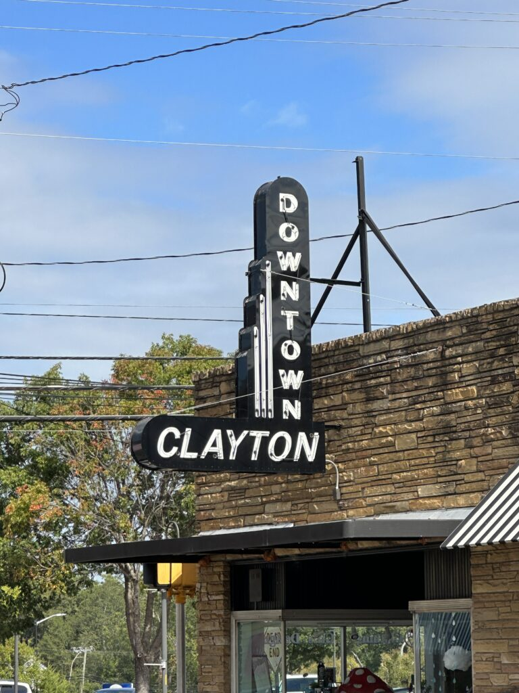
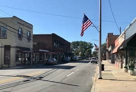

A Small Town with Alot to Discover

Located just southeast of Ralegh, Clayton, North Carolina, offers a mix of some small town charm, outdoor recreation, and a welcoming community.
Walking along the Neuse River to exploring the shops and restaurants of downtown, there is something for everyone.
Explore Clayton

Find Your Next Adventure
Clayton is home to a variety of outdoor activities, from hiking and biking trails to parks and recreational areas. If you're looking for a peaceful walk in nature you'll find it here.
Explore Downtown
Local Attractions
Clayton River Walk

Enjoy a walk, run, or bike ride along the Neuse River on this scenic paved greenway.
Clemmons Educational State Forest

Explore the diverse ecosystem and recreational opportunities in this beautiful state forest.
There's More to Clayton Than You Might Think
Whether you're planning your first visit or getting familiar with your new hometown, there's always something new to discover. Explore the rest of this guide to find your next stop in Clayton.
Explore Outdoors
Visit Downtown